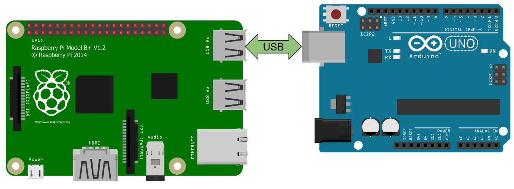
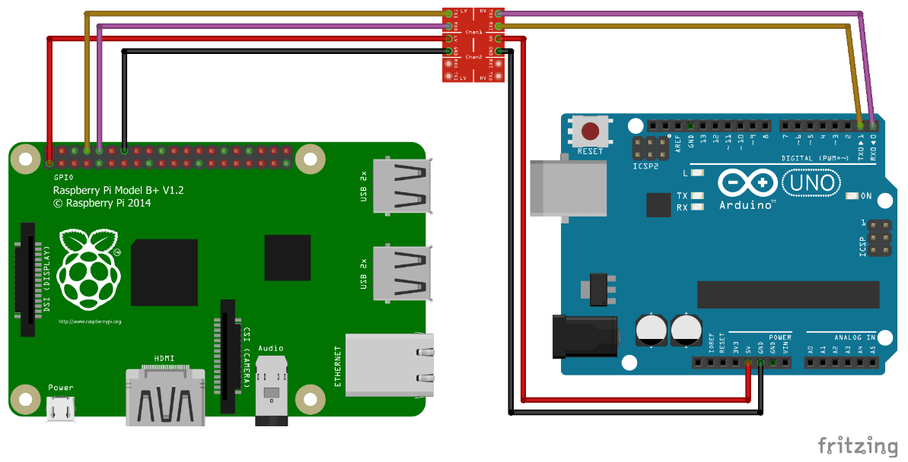
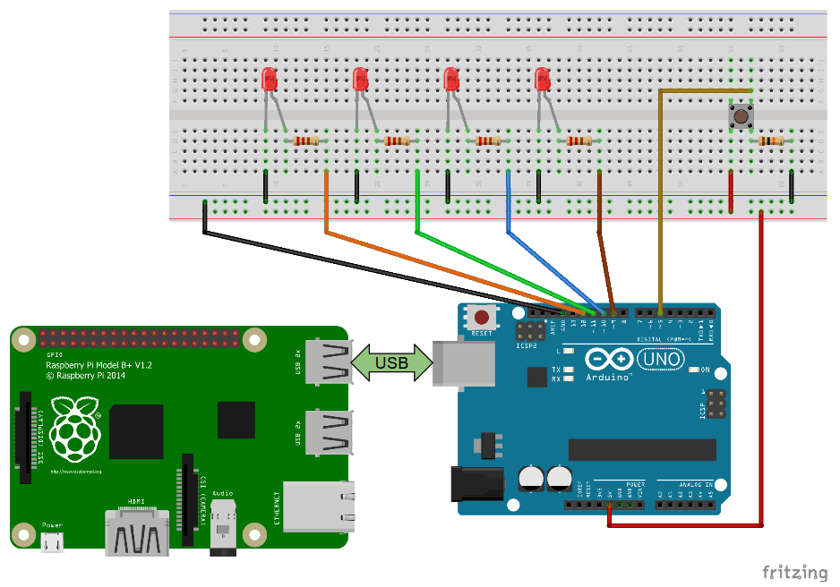

В этой статье мы покажем вам, как обмениваться данными между Raspberry Pi и платой Arduino через последовательный интерфейс.
Для начала, кратко объясним, что такое последовательный интерфейс. Затем посмотрим, как настроить оборудование и программное обеспечение, а затем углубимся в код Python (Cpp для Arduino). Разберем простой пример, ведущий к более совершенному использованию Raspberry Pi, Arduino и других электронных устройств.
Это руководство подходит для плат Raspberry Pi 4 (и ранних: 3B, 3B +) и любой платы Arduino. Мы будем использовать в основном Arduino Uno, но также более подробно расскажем о различиях между платами Arduino, когда дело касается последовательной передачи данных.
При работе с электронными устройствами передача данных является ключевым моментом. Каждое устройство – помимо своей основной функции – должно четко обмениваться данными с другими устройствами. Это одна из самых важных вещей, с которыми нужно уметь работать, чтобы перейти от очень простых приложений к более сложным.
ЧТО ТАКОЕ ПОСЛЕДОВАТЕЛЬНЫЙ ИНТЕРФЕЙС (UART)?
Последовательная передача данных – это просто способ их передачи. Данные отправляются последовательно, по одному биту (1 байт = 8 бит), в отличие от параллельной связи, когда одновременно отправляется много битов.
ЧТО ТАКОЕ ПРОТОКОЛ UART?
Говоря более конкретно, когда вы используете последовательный порт с Arduino и Raspberry Pi, вы используете протокол UART. UART означает «Универсальный асинхронный приёмопередатчик».
По сути, это асинхронный multi-master протокол, основанный на последовательном интерфейсе, который позволяет обмениваться данными между двумя платами. Будьте уверены, есть библиотеки, которые справятся со всеми низкими уровнями за вас.
Multi-master означает, что все подключенные устройства смогут отправлять данные, когда требуется. Это одно из основных отличий от протоколов «master-slaves», где только главное устройство может инициировать обмен данными.
Обычно используются другие протоколы, такие как I2C и SPI, когда вам нужны конфигурации ведущий-ведомый: например, когда у вас есть одна плата Arduino и несколько датчиков или исполнительных механизмов.
На плате Arduino Uno есть один UART, который можно использовать либо с USB-кабелем, либо с контактами RX / TX (не используйте его с обоими одновременно). Некоторые платы имеют больше доступных UART.
Например, Arduino Mega имеет разные последовательные интерфейсы (Serial, Serial1, Serial2, Serial3), а Arduino Zero имеет только порт USB (используйте SerialUSB вместо Serial).
На Raspberry Pi возможно подключить множество последовательных устройств к портам USB. У каждого устройства будет свое имя (посмотрим как их найти позже в этой статье). Вы также можете использовать GPIO (RX0 / TX0) для дополнительного UART.
ВЫ, НАВЕРНОЕ, УЖЕ ЗНАКОМЫ С БИБЛИОТЕКОЙ SERIAL ДЛЯ ARDUINO
Когда вы используете монитор последовательного порта, в общем случае ваша среда разработки Arduino запускает последовательный интерфейс с вашим Arduino. Вы можете получать и отправлять данные прямо с монитора последовательного порта.
То, что мы сделаем здесь, почти то же самое, за исключением того, что вместо вашей среды разработки Arduino другой стороной последовательного интерфейса будет плата Raspberry Pi. Нам нужно будет произвести некоторые настройки и написать код, чтобы он заработал. Тогда и Raspberry Pi, и Arduino смогут отправлять сообщения друг другу.
Давайте теперь посмотрим, как физически соединить две платы вместе.
НАСТРОЙКА ОБОРУДОВАНИЯ ДЛЯ ПОСЛЕДОВАТЕЛЬНОГО ИНТЕРФЕЙСА
Есть 2 способа подключить Raspberry Pi и Arduino для последовательного интерфейса.
1. С ПОМОЩЬЮ USB
Самый простой способ – соединить обе платы кабелем USB.
Со стороны Raspberry Pi USB-разъем – это все, что вам нужно. Вы можете выбрать любой из 4 портов USB, имеющихся на плате.
Для Arduino вы будете использовать USB-порт, который вы используете для загрузки кода с вашего компьютера (со среды разработки Arduino) на вашу плату. Выбор USB-разъема зависит от того, какая у вас версия. Для таких плат, как Arduino Uno и Mega, разъем будет отличаться от Arduino Nano и от Arduino Zero.
В этом примере мы использовали плату Arduino Uno.
�
Как видите, это простейшее аппаратное соединение, которое вы можете установить между Raspberry Pi и Arduino.
Примечание: сначала вам нужно подключить Arduino к компьютеру, чтобы вы могли загрузить код в плату. После этого подключите USB-кабель к Raspberry Pi. Raspberry Pi будет питать Arduino через этот кабель
2. С ПОМОЩЬЮ ИНТЕРФЕЙСА ВВОДА/ВЫВОДА ОБЩЕГО НАЗНАЧЕНИЯ (GPIO)
�
тобы установить последовательное соединение, вы также можете использовать простые провода между интерфейсом ввода/вывода Raspberry Pi и контактами Arduino�
�
В зависимости от типа вашей платы Arduino вам может потребоваться переключатель уровня напряжения. Raspberry Pi работает при напряжении 3,3 В. Для плат Arduino, таких как Due, 101, это тоже подойдет, так как они также используют 3,3 В.
Но для многих Arduino, таких как Uno, Mega, Leonardo, Nano и многих других, плата работает при напряжении 5 В. Таким образом, вам понадобится переключатель напряжения 3,3 В / 5 В для защиты Raspberry Pi при подключении RX и TX.
В оставшейся части этого руководства мы будем использовать настройку с помощью кабеля USB. С ним будет проще работать, поэтому советуем использовать USB-кабель вместо GPIO для последовательного интерфейса.
КАК НАСТРОИТЬ ПРОГРАММНОЕ ОБЕСПЕЧЕНИЕ RASPBERRY PI?
Для Arduino не требуется никаких специальных настроек. Просто убедитесь, что вы скачали и установили среду разработки Arduino.
Однако, на вашем Raspberry Pi требуется несколько вещей, чтобы интерфейс заработал.
Подключитесь к Raspberry Pi через протокол SSH или с помощью экрана, мыши и клавиатуры, и откройте консоль. Если вы еще не установили ОС на плату, вы можете очень легко установить Raspbian или Ubuntu на SD-карту.
1. НАЙДИТЕ ПЛАТУ ARDUINO
�
При подключении к Arduino через USB, вы должны обнаружить ее по адресу /dev/ttyACM0 или /dev/ttyUSB0 (иногда цифра в адресе может отличаться, к примеру /dev/ttyACM1).
Запустите
ls /dev/tty* |
Вы должны обнаружить плату. Если вы не уверены какой девайс – плата Arduino, отключите кабель и повторите.
Таким образом, вы сможете с легкостью определить имя платы Arduino.
2. НАСТРОЙКА РАЗРЕШЕНИЯ ДЛЯ РАБОТЫ ПОСЛЕДОВАТЕЛЬНОГО ИНТЕРФЕЙСА
Вы можете добавить своего пользователя в группу dialout, чтобы избежать таких ошибок, как: serial.serialutil.SerialException: [Errno 13] could not open port / dev / ttyACM0: [Errno 13] Permission denied: ‘/ dev / ttyACM0
$ sudo adduser ваше_имя_пользователя dialout |
Это даст доступ к последовательным устройствам (/ dev / ttyACMx, / dev / ttyUSBx,…).
После того, как вы добавили себя в группу dialout, вам необходимо перезагрузить Pi (или, по крайней мере, выйти из системы / войти в систему), чтобы применить изменения.
Установите библиотеку последовательного интерфейса Python на Raspberry Pi
Вам необходимо установить библиотеку, чтобы иметь возможность использовать последовательный интерфейс с Python.
В этой статье мы будем использовать библиотеку pySerial.
Чтобы установить её:
python3 -m pip install pyserial |
Эта библиотека Python хорошо известна и используется во многих приложениях.
Если при установке вы получаете сообщение об ошибке, например «/ usr / bin / python3: No module named pip», вам необходимо сначала установить pip с помощью
sudo apt install python3-pip |
3. ОРГАНИЗАЦИЯ СВЯЗИ ARDUINO И RASPBERRY PI
Начнем с очень простой программы.
Код Arduino
Загрузите этот код со своего компьютера в Arduino, используя среду разработки Arduino.
|
2 3 4 5 6 7 |
void setup() { Serial.begin(9600); } void loop() { Serial.println("Hello from Arduino!"); delay(1000); } |
Для начала, мы инициализируем последовательный порт и выбираем скорость передачи, в данном случае, 9600 бод. 9600 – это обычно используемая скорость передачи, к тому же довольно низкая.
В ваших будущих приложениях вы можете без проблем использовать скорость передачи 57600 или даже 115200 бод. В этом уроке мы продолжим с 9600.
Каждую секунду мы заставляем Arduino отправлять строку с помощью Serial.println (). Команда println () добавляет символ новой строки «\ n» в конец каждой строки.
Вы можете открыть монитор последовательного порта, чтобы увидеть строку на вашем компьютере.
Код Python на Raspberry Pi
Итак, что делает этот код?
|
2 |
#!/usr/bin/env python3 import serial |
Сначала мы импортируем предварительно установленную библиотеку последовательного интерфейса.
|
2 |
if __name__ == '__main__': ser = serial.Serial('/dev/ttyACM0', 9600, timeout=1) |
Последовательный интерфейс инициализируется вызовом serial.Serial () вместе с несколькими параметрами:
1) Имя последовательного устройства для Arduino: обычно ‘/ dev / ttyACM0’, ‘/ dev / ttyUSB0’ или подобное.
2) Скорость передачи: этот параметр очень важен. Вам нужно использовать ту же скорость передачи данных, что и на Arduino, иначе все, что вы будете читать и писать, работать не будет. Итак, мы выбрали 9600, как и в Arduino.
3) Тайм-аут: это тайм-аут для операций чтения. Здесь мы установили 1 секунду. Это означает, что когда мы читаем из Serial, программа не зависнет, если данные не поступят. Если после 1 секунды или чтения получены не все байты, функция вернет уже полученные байты.
Итак, serial.Serial () возвращает объект, который вы можете использовать для всех своих последовательных операций. Мы сохраняем его в переменной «ser».
ser.flush () |
Затем мы используем функцию flush (). Это очистит любой буфер ввода и вывода, чтобы избежать получения или отправки неверных / неполных данных в начале связи
|
2 3 4 |
while True: if ser.in_waiting> 0: line = ser.readline (). decode ('utf-8'). rstrip () print (line) |
В бесконечном цикле (подумайте о функции loop () в скетче Arduino) мы проверяем, доступны ли некоторые данные с помощью атрибута in_waiting (не ставьте скобки, это не функция). Если да, то мы можем прочитать данные.
Функция readline () будет читать все байты, пока не будет обнаружен символ новой строки.
Если мы просто выведем то, что получили, мы увидим надпись b’Hello from Arduino!\r\n’. Вы получаете байты при чтении из последовательного интерфейса, и нужно преобразовать (декодировать) эти байты в соответствующий тип данных. Итак, мы используем декодирование («utf-8») – также можно использовать декодирование («ascii») – для декодирования полученных данных и размещения их в строке.
Наконец, функция rstrip () специфична для строк, она позволяет удалить любые завершающие символы (новую строку, возврат каретки). Таким образом мы можем удалить «\ r» и «\ n» и получить правильную строку.
Примечание: здесь каждый раз читается полная строка. Если вы хотите прочитать определенное количество байтов – один или несколько – используйте функцию read (size=1).
4. ТЕСТИРОВАНИЕ ПОСЛЕДОВАТЕЛЬНОЙ СВЯЗИ
Теперь отключите плату Arduino от компьютера и подключите ее к Raspberry Pi.
Код Arduino запускается, как только плата включается.
На Raspberry Pi сделайте файл Python исполняемым и запустите его.
|
2 3 4 5 |
$ chmod +x receive_serial_data_from_arduino.py $ ./receive_serial_data_from_arduino.py Hello from Arduino! Hello from Arduino! Hello from Arduino! |
Работает! Строка, отправляемая Arduino, каждую секунду отображается в консоли Raspberry Pi.
ДВУНАПРАВЛЕННАЯ ПОСЛЕДОВАТЕЛЬНАЯ СВЯЗЬ МЕЖДУ RASPBERRY PI И ARDUINO
Давайте сделаем немного интереснее. Вы видели, как отправлять данные с Arduino на Raspberry Pi. В этой части вы увидите, как отправлять сообщения от Raspberry Pi с Arduino. Таким образом, у вас будут два направления коммуникации, и вы сможете создавать программы, требующие взаимодействия друг от друга.
Код Arduino
Здесь мы проверяем, получил ли Arduino данные с помощью Serial.available (). Это даст информацию о количество байтов, уже доставленных и сохраненных в буфере приема.
Если поступили какие-то данные, мы используем Serial.readStringUntil () с символом новой строки «\n», чтобы перейти на следующую строку. Это похоже на функцию readline (). Все байты, полученные до “\ n”, автоматически конвертируются и добавляются в объект Arduino String.
Затем мы просто выводим полученные данные, добавив некоторый текст.
Примечание: если вы хотите читать байты один за другим, вы можете сделать это с помощью функции Serial.read ().
Затем вам нужно будет преобразовать эти байты, если необходимо: int, string и т. д.
Код Python для Raspberry Pi
Используйте функцию pySerial write () для отправки данных в Arduino.
Здесь мы добавили символ «b» перед отправляемой строкой. Это закодирует строку в байты, потому что через последовательный интерфейс можно отправлять только байты.
Любые данные, которые не являются байтами или байтовыми массивами, должны быть преобразованы перед отправкой. Если вы просто попытаетесь отправить такую строку, вы получите эту ошибку ” TypeError: unicode strings are not supported, please encode to bytes: ‘Hello from Raspberry Pi!’ ”
Примечание: вместо
ser.write (b "Hello from Raspberry Pi! \ n") |
Вы можете написать
ser.write ("Hello from Raspberry Pi! \ n" .encode ('utf-8')) |
или
ser.write ("Hello from Raspberry Pi! \ n" .encode ('ascii')) |
Функция encode () закодирует строку для последовательного интерфейса.
Кроме того, мы добавляем символ новой строки «\n», потому что это то, что требуется от Arduino для завершения чтения с помощью Serial.readStringUntil (‘\n’).
Затем мы делаем то же самое, что и раньше: читаем строку, декодируем ее в строку и удаляем любой завершающий символ.
Мы не используем здесь ser.in_waiting, потому что для этого конкретного приложения мы знаем, что Arduino отправит обратно некоторые данные сразу после того, как получит строку. Кроме того, у нас есть тайм-аут в 1 секунду, чтобы не застрять на этой строке.
Наконец, мы выводим полученную строку и ждем 1 секунду с помощью time.sleep () перед отправкой следующей строки через последовательный интерфейс.
ПРОВЕРКА ДВУНАПРАВЛЕННОЙ ПОСЛЕДОВАТЕЛЬНОЙ СВЯЗИ
На Raspberry Pi сделайте свой файл Python исполняемым и запустите его.
Отлично! Arduino получил строку и отправил ее обратно с еще несколькими словами. Затем Raspberry Pi получил и вывел последнюю строку.
ПРИМЕР ПОСЛЕДОВАТЕЛЬНОЙ СВЯЗИ RASPBERRY PI И ARDUINO
Теперь, когда вы знаете, как настроить Arduino и Raspberry Pi для последовательной связи и написать программы для обмена данными между каждой платой, давайте создадим более сложное приложение.
В этом примере к плате Arduino будут подключены 4 светодиода и одна кнопка.
Raspberry Pi и Arduino будут подключены с помощью USB-кабеля и использовать последовательную связь для связи между собой.
Вот результат, который мы хотим получить:
Это наша возможность попрактиковаться во взаимодействии и синхронизации задач между Arduino и Raspberry Pi.
Если вы дошли до этого пункта руководства, мы рекомендуем вам попробовать написать код самостоятельно прежде чем вы прочитаете код, который предоставлен ниже.
Кроме того, существует множество вариантов исполнения кода, поэтому ваш код может отличаться от данного и это совершенно нормально. Вы можете получить справку из справочника Arduino Serial и справочника pySerial API. СХЕМА
При подключении к Arduino через USB, вы должны обнаружить ее по адресу /dev/ttyACM0 или /dev/ttyUSB0 (иногда цифра в адресе может отличаться, к примеру /dev/ttyACM1).
Запустите
ls /dev/tty* |
Вы должны обнаружить плату. Если вы не уверены какой девайс – плата Arduino, отключите кабель и повторите.
Таким образом, вы сможете с легкостью определить имя платы Arduino.
2. НАСТРОЙКА РАЗРЕШЕНИЯ ДЛЯ РАБОТЫ ПОСЛЕДОВАТЕЛЬНОГО ИНТЕРФЕЙСА
Вы можете добавить своего пользователя в группу dialout, чтобы избежать таких ошибок, как: serial.serialutil.SerialException: [Errno 13] could not open port / dev / ttyACM0: [Errno 13] Permission denied: ‘/ dev / ttyACM0
$ sudo adduser ваше_имя_пользователя dialout |
Это даст доступ к последовательным устройствам (/ dev / ttyACMx, / dev / ttyUSBx,…).
После того, как вы добавили себя в группу dialout, вам необходимо перезагрузить Pi (или, по крайней мере, выйти из системы / войти в систему), чтобы применить изменения.
Установите библиотеку последовательного интерфейса Python на Raspberry Pi
Вам необходимо установить библиотеку, чтобы иметь возможность использовать последовательный интерфейс с Python.
В этой статье мы будем использовать библиотеку pySerial.
Чтобы установить её:
python3 -m pip install pyserial |
Эта библиотека Python хорошо известна и используется во многих приложениях.
Если при установке вы получаете сообщение об ошибке, например «/ usr / bin / python3: No module named pip», вам необходимо сначала установить pip с помощью
sudo apt install python3-pip |
3. ОРГАНИЗАЦИЯ СВЯЗИ ARDUINO И RASPBERRY PI
Начнем с очень простой программы.
Код Arduino
Загрузите этот код со своего компьютера в Arduino, используя среду разработки Arduino.
|
2 3 4 5 6 7 |
void setup() { Serial.begin(9600); } void loop() { Serial.println("Hello from Arduino!"); delay(1000); } |
Для начала, мы инициализируем последовательный порт и выбираем скорость передачи, в данном случае, 9600 бод. 9600 – это обычно используемая скорость передачи, к тому же довольно низкая.
В ваших будущих приложениях вы можете без проблем использовать скорость передачи 57600 или даже 115200 бод. В этом уроке мы продолжим с 9600.
Каждую секунду мы заставляем Arduino отправлять строку с помощью Serial.println (). Команда println () добавляет символ новой строки «\ n» в конец каждой строки.
Вы можете открыть монитор последовательного порта, чтобы увидеть строку на вашем компьютере.
Код Python на Raspberry Pi
Итак, что делает этот код?
|
2 |
#!/usr/bin/env python3 import serial |
Сначала мы импортируем предварительно установленную библиотеку последовательного интерфейса.
|
2 |
if __name__ == '__main__': ser = serial.Serial('/dev/ttyACM0', 9600, timeout=1) |
Последовательный интерфейс инициализируется вызовом serial.Serial () вместе с несколькими параметрами:
1) Имя последовательного устройства для Arduino: обычно ‘/ dev / ttyACM0’, ‘/ dev / ttyUSB0’ или подобное.
2) Скорость передачи: этот параметр очень важен. Вам нужно использовать ту же скорость передачи данных, что и на Arduino, иначе все, что вы будете читать и писать, работать не будет. Итак, мы выбрали 9600, как и в Arduino.
3) Тайм-аут: это тайм-аут для операций чтения. Здесь мы установили 1 секунду. Это означает, что когда мы читаем из Serial, программа не зависнет, если данные не поступят. Если после 1 секунды или чтения получены не все байты, функция вернет уже полученные байты.
Итак, serial.Serial () возвращает объект, который вы можете использовать для всех своих последовательных операций. Мы сохраняем его в переменной «ser».
ser.flush () |
Затем мы используем функцию flush (). Это очистит любой буфер ввода и вывода, чтобы избежать получения или отправки неверных / неполных данных в начале связи
|
2 3 4 |
while True: if ser.in_waiting> 0: line = ser.readline (). decode ('utf-8'). rstrip () print (line) |
В бесконечном цикле (подумайте о функции loop () в скетче Arduino) мы проверяем, доступны ли некоторые данные с помощью атрибута in_waiting (не ставьте скобки, это не функция). Если да, то мы можем прочитать данные.
Функция readline () будет читать все байты, пока не будет обнаружен символ новой строки.
Если мы просто выведем то, что получили, мы увидим надпись b’Hello from Arduino!\r\n’. Вы получаете байты при чтении из последовательного интерфейса, и нужно преобразовать (декодировать) эти байты в соответствующий тип данных. Итак, мы используем декодирование («utf-8») – также можно использовать декодирование («ascii») – для декодирования полученных данных и размещения их в строке.
Наконец, функция rstrip () специфична для строк, она позволяет удалить любые завершающие символы (новую строку, возврат каретки). Таким образом мы можем удалить «\ r» и «\ n» и получить правильную строку.
Примечание: здесь каждый раз читается полная строка. Если вы хотите прочитать определенное количество байтов – один или несколько – используйте функцию read (size=1).
4. ТЕСТИРОВАНИЕ ПОСЛЕДОВАТЕЛЬНОЙ СВЯЗИ
Теперь отключите плату Arduino от компьютера и подключите ее к Raspberry Pi.
Код Arduino запускается, как только плата включается.
На Raspberry Pi сделайте файл Python исполняемым и запустите его.
|
2 3 4 5 |
$ chmod +x receive_serial_data_from_arduino.py $ ./receive_serial_data_from_arduino.py Hello from Arduino! Hello from Arduino! Hello from Arduino! |
Работает! Строка, отправляемая Arduino, каждую секунду отображается в консоли Raspberry Pi.
ДВУНАПРАВЛЕННАЯ ПОСЛЕДОВАТЕЛЬНАЯ СВЯЗЬ МЕЖДУ RASPBERRY PI И ARDUINO
Давайте сделаем немного интереснее. Вы видели, как отправлять данные с Arduino на Raspberry Pi. В этой части вы увидите, как отправлять сообщения от Raspberry Pi с Arduino. Таким образом, у вас будут два направления коммуникации, и вы сможете создавать программы, требующие взаимодействия друг от друга.
Код Arduino
Здесь мы проверяем, получил ли Arduino данные с помощью Serial.available (). Это даст информацию о количество байтов, уже доставленных и сохраненных в буфере приема.
Если поступили какие-то данные, мы используем Serial.readStringUntil () с символом новой строки «\n», чтобы перейти на следующую строку. Это похоже на функцию readline (). Все байты, полученные до “\ n”, автоматически конвертируются и добавляются в объект Arduino String.
Затем мы просто выводим полученные данные, добавив некоторый текст.
Примечание: если вы хотите читать байты один за другим, вы можете сделать это с помощью функции Serial.read ().
Затем вам нужно будет преобразовать эти байты, если необходимо: int, string и т. д.
Код Python для Raspberry Pi
Используйте функцию pySerial write () для отправки данных в Arduino.
Здесь мы добавили символ «b» перед отправляемой строкой. Это закодирует строку в байты, потому что через последовательный интерфейс можно отправлять только байты.
Любые данные, которые не являются байтами или байтовыми массивами, должны быть преобразованы перед отправкой. Если вы просто попытаетесь отправить такую строку, вы получите эту ошибку ” TypeError: unicode strings are not supported, please encode to bytes: ‘Hello from Raspberry Pi!’ ”
Примечание: вместо
ser.write (b "Hello from Raspberry Pi! \ n") |
Вы можете написать
ser.write ("Hello from Raspberry Pi! \ n" .encode ('utf-8')) |
или
ser.write ("Hello from Raspberry Pi! \ n" .encode ('ascii')) |
Функция encode () закодирует строку для последовательного интерфейса.
Кроме того, мы добавляем символ новой строки «\n», потому что это то, что требуется от Arduino для завершения чтения с помощью Serial.readStringUntil (‘\n’).
Затем мы делаем то же самое, что и раньше: читаем строку, декодируем ее в строку и удаляем любой завершающий символ.
Мы не используем здесь ser.in_waiting, потому что для этого конкретного приложения мы знаем, что Arduino отправит обратно некоторые данные сразу после того, как получит строку. Кроме того, у нас есть тайм-аут в 1 секунду, чтобы не застрять на этой строке.
Наконец, мы выводим полученную строку и ждем 1 секунду с помощью time.sleep () перед отправкой следующей строки через последовательный интерфейс.
ПРОВЕРКА ДВУНАПРАВЛЕННОЙ ПОСЛЕДОВАТЕЛЬНОЙ СВЯЗИ
На Raspberry Pi сделайте свой файл Python исполняемым и запустите его.
Отлично! Arduino получил строку и отправил ее обратно с еще несколькими словами. Затем Raspberry Pi получил и вывел последнюю строку.
ПРИМЕР ПОСЛЕДОВАТЕЛЬНОЙ СВЯЗИ RASPBERRY PI И ARDUINO
Теперь, когда вы знаете, как настроить Arduino и Raspberry Pi для последовательной связи и написать программы для обмена данными между каждой платой, давайте создадим более сложное приложение.
В этом примере к плате Arduino будут подключены 4 светодиода и одна кнопка.
Raspberry Pi и Arduino будут подключены с помощью USB-кабеля и использовать последовательную связь для связи между собой.
Вот результат, который мы хотим получить:
Это наша возможность попрактиковаться во взаимодействии и синхронизации задач между Arduino и Raspberry Pi.
Если вы дошли до этого пункта руководства, мы рекомендуем вам попробовать написать код самостоятельно прежде чем вы прочитаете код, который предоставлен ниже.
Кроме того, существует множество вариантов исполнения кода, поэтому ваш код может отличаться от данного и это совершенно нормально. Вы можете получить справку из справочника Arduino Serial и справочника pySerial API.
СХЕМА
�
�
ЧТО НУЖНО, ЧТОБЫ СОБРАТЬ ЭТУ СХЕМУ?
Код Arduino
С помощью функции setup () мы задаем номера контактов для всех 4 светодиодов и кнопки.
Также убеждаемся, что все светодиоды выключены.
Затем в цикле loop () мы делаем 2 вещи: обрабатываем кнопку и управляем 4 светодиодами.
Оба действия выполняются одно за другим, но обрабатываются они очень быстро, поэтому создается впечатление, что они выполняются одновременно. Это один из примеров многозадачности программы Arduino.
Первое действие: работа с кнопкой.
Нам нужно заблокировать кнопку, чтобы проигнорировать дребезг контактов.
Когда мы узнаем, что кнопка нажата, мы можем отправить некоторые данные на Raspberry Pi через последовательный интерфейс.
Здесь использована функция Serial.write (): она отправляет байт или серию байтов. Она отличается от Serial.print (), благодаря чему вывод будет приятно видеть на мониторе последовательного порта. Поскольку мы взаимодействуем с другой машиной, а не с человеком, проблем с этим нет.
Здесь мы отправляем число 18. Это просто случайное число, которое мы будем ассоциировать с состоянием «кнопка была нажата», поэтому, когда Raspberry Pi получит номер, он проверит, равно ли оно 18.
Вы можете отправлять различные команды или сообщения через последовательный интерфейс, используя разные числа.
Примечание: в общем случае вы также можете использовать прерывания Arduino, чтобы узнать, когда была нажата кнопка. Если вы это делаете, не используйте библиотеку Serial в прерывании. Если вам необходимо использовать прерывания, установите флаг внутри прерывания используя переменную типа boolean) и используйте Serial внутри вашей функции loop ().
И второе действие: управление 4 светодиодами.
Сначала мы проверяем, получил ли Arduino данные от Raspberry Pi по последовательному интерфейсу.
Если да, мы читаем следующий байт с помощью Serial.read (). Здесь вы можете заметить небольшой трюк, состоящий в вычитании символа «0», что позволяет преобразовать символ в число, которое он собой представляет.
После этого все очень просто. Мы выключаем все светодиоды, а затем включаем только светодиод, связанный с номером: 1, 2, 3 или 4. В случае отправки неправильного значения ни один светодиод не будет включен.
Код Python для Raspberry Pi
Сначала мы добавляем одну строку импорта: библиотеку Random.
В бесконечном цикле («while True») мы сначала читаем один байт из Serial. Тайм-аут установлен на 1 секунду. Если через секунду ничего не получено, функция read () вернет b».
Поэтому мы проверяем, было ли то, что мы получили, просто пустым (b”) или что-то ещё. В последнем случае мы преобразуем полученные данные в целое число, чтобы их можно было использовать в коде. Для этого мы используем функцию int.from_bytes (), которая преобразует b’0x12′ (шестнадцатеричное представление 18 – 0x12) в 18.
Как видите, мы проверяем, что число 18, чтобы продолжить действие. Если нужно обрабатывать разные команды, рекомендуется использовать разные номера для каждой команды.
Мы выбираем случайное число от 1 до 4, чтобы определить, какой светодиод включить. Затем мы отправляем его с помощью функции pySerial write (). Чтобы отправить целое число через Serial, мы сначала преобразуем его в строку с помощью str (), а затем кодируем с помощью encode («utf-8»).
ТЕСТИРОВАНИЕ ПРИЛОЖЕНИЯ
Теперь вы можете подключить Arduino к Raspberry Pi с помощью USB-кабеля. Затем Raspberry Pi будет подавать питание как на Arduino, так и на 4 светодиода.
Если у вас есть много устройств, подключенных к вашему Arduino, вы можете добавить внешний источник питания к разъему источника питания Arduino. Например, если вы хотите использовать шаговый двигатель, Raspberry Pi однозначно не хватит тока для себя, Arduino и двигателя. В данном случае с 4 светодиодами все будет работать.
Запустите свой скрипт Python и нажмите кнопку. Вы увидите лог, и один из светодиодов на Arduino будет включен.
Каждый раз, когда вы нажимаете кнопку:
ВЫВОД
В этом руководстве вы узнали, как обмениваться данными между Raspberry Pi и платой Arduino через последовательный интерфейс.
В жизни это вам пригодится? Ответ – да, и довольно часто.
Raspberry Pi отлично подходит для того, чтобы использовать большую электрическую мощность, встроенную в ваше приложение. Вы можете запускать законченное программное обеспечение на многих языках программирования, веб-серверах, приложениях для робототехники и т.д. Raspberry Pi, безусловно, имеет несколько GPIO, которые вы можете использовать, но они не так хороши, как Arduino. Кроме того, у вас больше шансов сжечь свой Pi, если вы сделаете что-то не так с оборудованием.
Arduino больше подходит для непосредственного управления аппаратными датчиками и исполнительными механизмами: IMU, серводвигателями, шаговыми двигателями, всем, что требует большей мощности и т.д.
В целом, две платы могут отлично работать вместе: Raspberry Pi в качестве «мозга» приложения, Arduino в качестве «мускулов» и последовательная связь, для их взаимодействия.
�
�
�